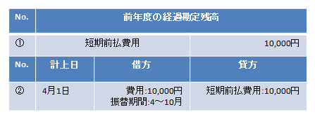

3. 経過勘定対象取引の再登録（前年度以前発生分）¶
経過勘定残高を経過勘定振替実行処理により月々取り崩すため、前年度までに契約が行われている経過勘定対象の取引の再登録を行います。期首時点の経過勘定（前払費用、前受収益）の残高を経過勘定振替処理の対象明細に振り替える仕訳を計上します。
3.1. 着手条件¶
期首残高生成仕訳取込を終えていること。
経過勘定振替マスタの登録を終えていること。
3.2. 実行手順¶
3.2.1. パラメータ設定¶
以下のメニューより、パラメータを設定してください。
項目名
設定値
経過勘定実行単位区分
経過勘定振替処理を実行する際の単位を指定します。
1:会社、2:本支店
経過勘定実施番号採番号方法
経過勘定振替処理を実行する際に発行される実施番号の採番方法を指定します。
1:連番
2:年度+連番（例：20210000000000000001）
3:年月+連番（例：20210400000000000001）
経過勘定振替決算種別
経過勘定振替実行で作成された仕訳に付与される決算種別を指定します。
他の決算種別[1]との混同を防ぐため、経過勘定振替の専用の種別を指定することを推奨します。
経過勘定振替分析フィールド・分析テキスト設定
経過勘定振替処理にて、経過勘定科目・未収未払科目の仕訳明細に設定する分析フィールドと分析テキストの値のパターンを指定します。
1:費用・収益側の値をコピー
その他：設定しない。
脚注
3.2.2. 前払費用、前受収益の振替¶
前年度までの経過勘定残高を経過勘定振替実行処理により月々取り崩すため、経過勘定残高を経過勘定振替処理の対象明細に振り替える仕訳を計上する。
想定される振替仕訳例

コラム
①前年度の経過勘定残高が10,000円ある場合には、②のような振替仕訳を計上します。
経過勘定振替マスタにて設定を行った科目コードを設定する。
経過勘定として振替を行う期間を振替期間に設定する。

3.2.3. 一括取込¶
Biz∫会計管理者アカウントでポータル画面にログインし、以下のメニューから一括取込を行います。
メニュー
Biz∫ 会計 一般会計 仕訳取込処理 仕訳一括取込
シート「一括取込シート_仕訳.csv」の所定のフォーマットに従って項目を埋めたcsvファイルを準備します。
「F6:ファイル選択」を押下し、ファイルを指定後、「F5:取込」より登録します。
3.3. 完了条件¶
前払費用、前受収益の合計金額が移行前の経過勘定残高と一致することを確認します。
以下のメニューより、経過勘定台帳を取得し、勘定科目コード、計上組織をキーに、振替られた前払費用、前受収益の合計金額が移行前の経過勘定残高と一致することを確認します。
メニュー
Biz∫ 会計 一般会計 経過勘定管理 経過勘定台帳実行条件
対象期間
当月
試算表を取得し、前年度までの経過対象科目の残高が減少していることを確認する。
以下のメニューより、試算表を取得し、会社コード、計上組織コード、勘定科目コード、補助科目コードをキーに、前年度までの経過対象科目の残高が減少していることを確認します。
コラム
すべての経過勘定残高をBiz∫会計で管理する場合には、残高が0となっていることを確認する。
メニュー
Biz∫ 会計 一般会計 帳票出力処理 試算表実行条件
対象期間
当月
科目構成
科目構成コード
対象組織
全社
集計科目を表示する
チェック
決算
全ての種別を選択する